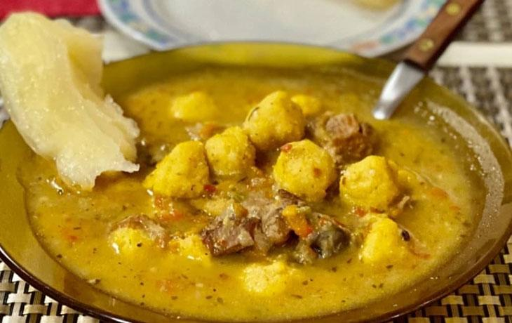

El vorí vorí es una sopa tradicional paraguaya con bolitas de maíz y queso, preparada con caldo de pollo o carne y verduras, ideal para días fríos.

¿Que ingredientes se necesitan?
Para el caldo:
6 presas de pollo (muslos, patas o carcasa con carne)
3 litros de agua
1 cebolla mediana picada
2 tomates picados
2 cucharadas de aceite
Para las bolitas:
300 g de harina de maíz fina
150 g de queso Paraguay desmenuzado
Sal al gusto
Preparacion
Sellado del pollo: Calentar el aceite en una olla grande y dorar las presas de pollo por todos lados hasta que tomen un color uniforme. Retirar y reservar dejando la grasa en la olla.
Sofrito: En la misma olla, agregar la cebolla, el locote y los tomates picados. Cocinar a fuego medio hasta que la cebolla esté transparente y el tomate integrado. Añadir sal, pimienta, comino y orégano.
Formación del caldo: Incorporar el zapallo y la zanahoria, mezclar y devolver el pollo a la olla. Agregar el agua y las hojas de laurel, llevar a hervor y luego cocinar a fuego lento durante 40-45 minutos hasta que las verduras estén blandas y el caldo espese naturalmente.
Preparación de la masa de vorí vorí: Mezclar la harina de maíz con la sal y el queso desmenuzado. Agregar poco a poco caldo caliente y amasar hasta obtener una masa húmeda y suave.
Formado de bolitas: Con las manos ligeramente húmedas, formar bolitas del tamaño de una nuez o albóndiga pequeña, procurando que sean uniformes para una cocción pareja.
Cocción de las bolitas: Agregar las bolitas al caldo hirviendo suavemente, una a una, y cocinar hasta que suban a la superficie (aproximadamente 5-8 minutos). No sobrecocer para evitar que se desarmen.
Reposo y terminación: Apagar el fuego y dejar reposar tapado unos 10 minutos. Justo antes de servir, espolvorear la cebollita de verdeo picada y ajustar la sal si es necesario.